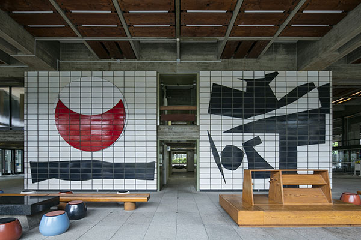
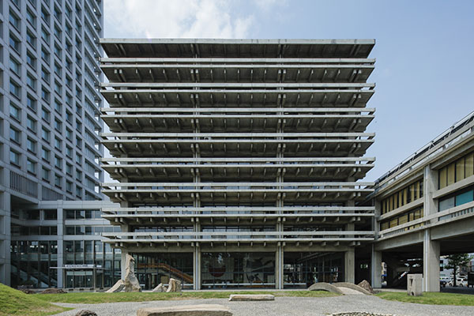
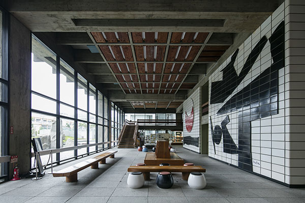
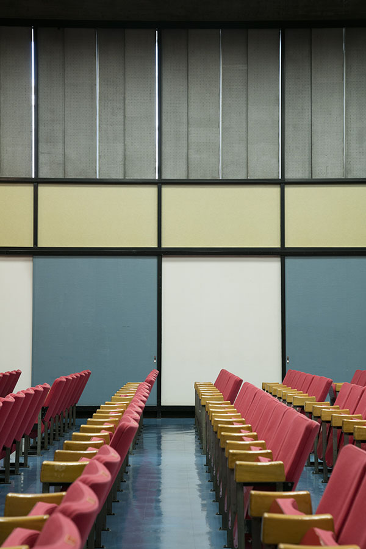
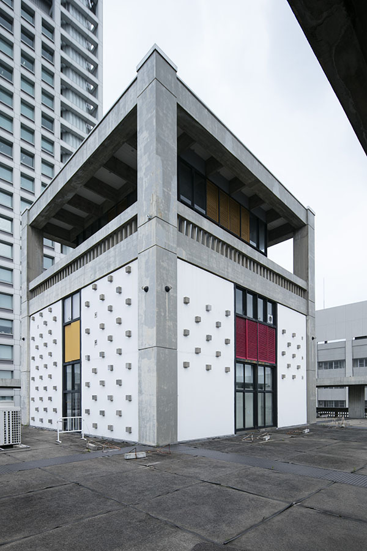
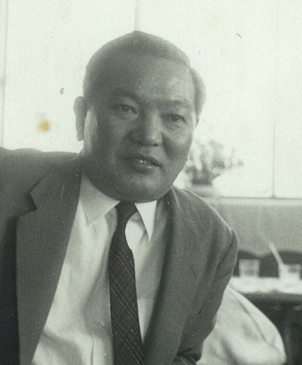
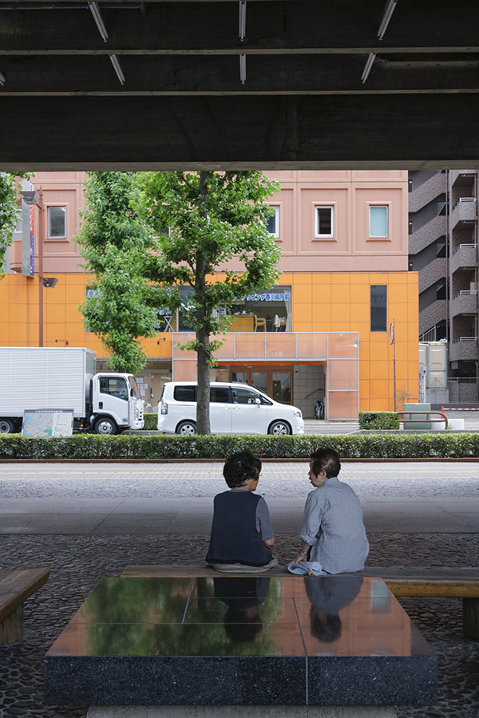
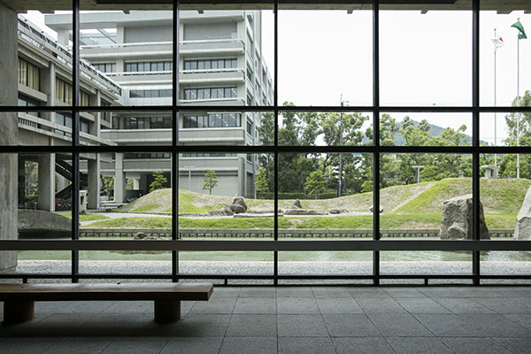

Префектура Кагава · Такамацу · Архитектура
Здание правительства префектуры Кагава: начало «арт-префектуры»

В 1958 году в Такамацу появилось здание правительства префектуры, спроектированное Кэндзо Тангэ. Сегодня его называют отправной точкой «арт-префектуры» Кагава: именно здесь искусство, дизайн и архитектура впервые объединились в общественном здании.
Искусство как выражение демократии
Здание, где архитектура служит людям
В 1958 году в Такамацу появилось двухкорпусное здание правительства префектуры из железобетона: высокий и низкий корпуса. Автор проекта, Кэндзо Тангэ, представил в бетоне японскую красоту структуры из колонн и балок, о здании писал даже американский журнал Time.




Причину, по которой здание стало символом искусства, объясняет собранная в нём коллекция работ художников и дизайнеров. В вестибюле первого этажа высокого корпуса находится керамическое панно уроженца Кагавы Гэнъитиро Инокумы, а стулья и мебель зала на втором этаже низкого корпуса оформил дизайнер интерьеров Исаму Кэммоти. Скамьи вестибюля и деревянный гардероб проектировал сам Тангэ, а изготовила «Сакура сэйсакусё», сегодня известный мебельный бренд Кагавы.

Огромную роль в создании этого здания сыграл тогдашний губернатор Масанори Канэко. Занимая пост шесть сроков, 24 года, он носил прозвище «губернатор-дизайнер» и определил облик Кагавы на десятилетия вперёд. «Канэко хотел построить здание, достойное эпохи демократии. Такамацу выгорел при авианалёте, поэтому в здании правительства видели возвращение к жизни и демократии. Тангэ он говорил и о том, что нужен символ туристической префектуры Кагава, и просил использовать местные материалы», рассказывает сотрудник префектуры Иматаки.
С Тангэ Канэко познакомил именно Инокума, старший товарищ губернатора по школе. Канэко сомневался в первоначальном проекте одной компании, случайно встретил Инокуму в Токио и получил совет. Благодаря Инокуме двое оказались в одной каюте ночного парохода из Осаки в Такамацу, разговорились, и работа над зданием началась как настоящая драма.
Искусство как выражение духа
Город, построенный вместе с искусством
Канэко и Тангэ стремились создать общественное пространство, куда горожане могли бы свободно заходить. Первый этаж низкого корпуса, ведущий к главному входу, поднят на колоннах высотой около 7 метров и образует пилоти. Граница с пешеходной улицей размыта, и идущие по городу люди естественно оказываются на территории правительства. «Пилоти это один из пяти принципов современной архитектуры Ле Корбюзье, но мысль использовать его как место встречи горожан, как место демократии, первым высказал Тангэ. Он придал ему функцию городской площади», говорит Иматаки. На скамьях под пилоти горожане отдыхают.


Интерес Канэко к культуре и искусству вырос из встречи с Тикацурой Миякэ, когда Канэко после университета работал судьёй, который позже станет мэром посёлка Наосима. Миякэ, представший перед судом по одному делу, объяснял свои мотивы желанием «защитить японский дух». «С тех пор Канэко постоянно спрашивал себя, что же такое японский дух. Прочитав книги Бруно Таута, он понял, что именно искусство способно выразить дух эпохи в форме». Миякэ вернулся на Наосиму и продвигал культурные проекты, из которых выросли «Бэнэссэ Арт Сайт Наосима» и Триеннале Сэтоути. «Без отношений губернатора и мэра художественная среда Кагавы сегодня не выросла бы».
Здание правительства префектуры Кагава (Восточный корпус)
- Адрес
- префектура Кагава, Такамацу, Бантё 4-1-10
- Телефон
- +81 87-831-1111
- Часы работы
- 8:30–17:15 (для посетителей доступны будние дни)
- Выходные
- суббота, воскресенье, праздники
- Вход
- бесплатно